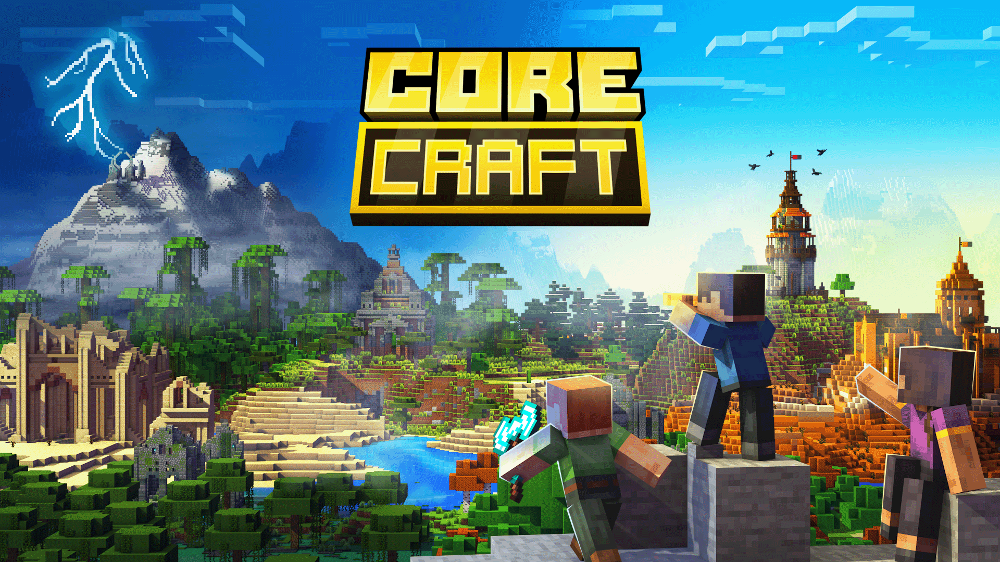
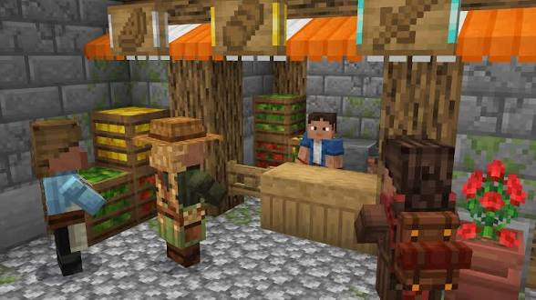
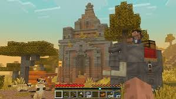

Core Craft is a powerful Minecraft Bedrock Edition addon that expands the vanilla survival experience with new villagers, advanced structures, unique mobs, improved combat systems and exciting RPG-style features. The addon is designed to make Minecraft feel more alive while keeping the original gameplay balanced and enjoyable. With Core Craft installed, players can discover upgraded villages, encounter new villager professions, fight stronger illagers and explore a world filled with new adventures. Villages become more realistic and interactive, creating a much better survival experience compared to standard Minecraft. The addon also introduces improved iron golems, village defenders and several new gameplay mechanics that help make exploration, trading and combat more interesting. Every village feels unique and offers new opportunities for players who enjoy survival, roleplay and adventure-based gameplay. Core Craft is perfect for players who want more content without completely changing the vanilla Minecraft feeling. The addon blends naturally into the game and provides a fresh experience for both new and experienced Minecraft players. Whether you enjoy building, exploring, fighting mobs or developing your own village, Core Craft adds countless new possibilities that make your Minecraft world feel bigger, more immersive and more exciting than ever before.

📥 Installation Guide Follow these simple steps to install Core Craft Addon in Minecraft Bedrock Edition: 1. Download the Core Craft Addon files from the download links provided below. 2. Locate the downloaded addon file on your device. 3. Tap the file to automatically import it into Minecraft Bedrock Edition. 4. Wait until Minecraft finishes importing the Resource Pack and Behavior Pack. 5. Open Minecraft and create a new world or edit an existing world. 6. Go to the Resource Packs section and activate the Core Craft Resource Pack. 7. Go to the Behavior Packs section and activate the Core Craft Behavior Pack. 8. Open the Experiments menu and enable all required Experimental Features. 9. Save the world settings and enter your world. 10. Explore villages, discover new mobs, interact with upgraded villagers and enjoy the enhanced survival experience provided by Core Craft. Note: For the best experience, use the latest version of Minecraft Bedrock Edition supported by the addon.

⬇️ 0 Downloads
Download👑 Credits Addon Name: Core Craft - A Vanilla Expansion Original Creator: Core Craft Team Source: CurseForge Official Addon Page: CurseForge - Core Craft All rights to the addon, models, textures, scripts and assets belong to their respective creators. Hero Verse does not claim ownership of this addon. This page is provided for informational purposes, installation guidance and addon discovery. Special thanks to the Core Craft Team for creating and maintaining this amazing Minecraft Bedrock Edition addon. © 2026 herogamingxyz
👁 0 Views